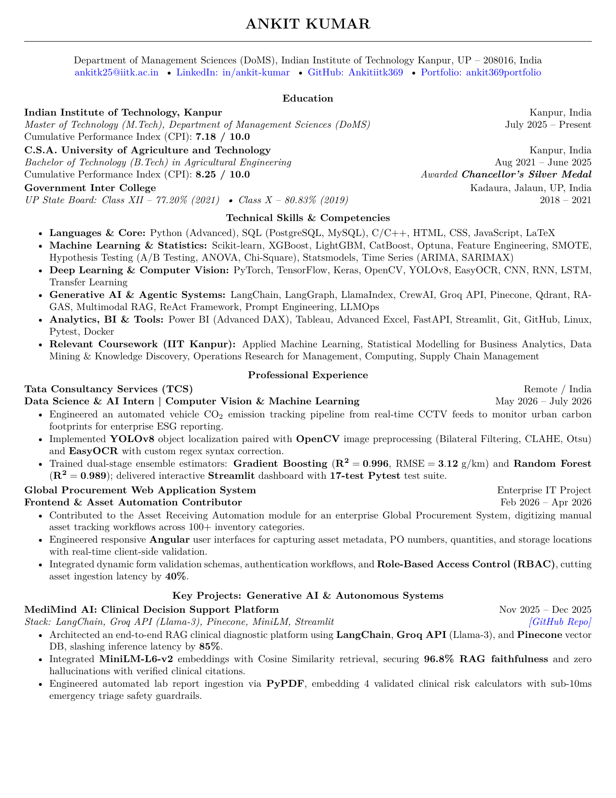
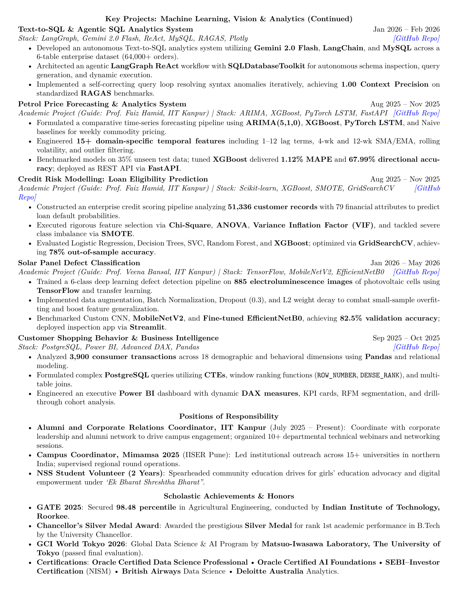
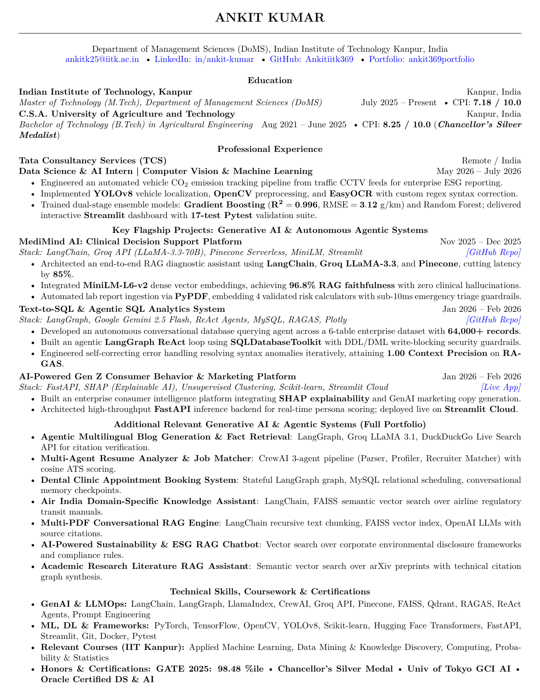
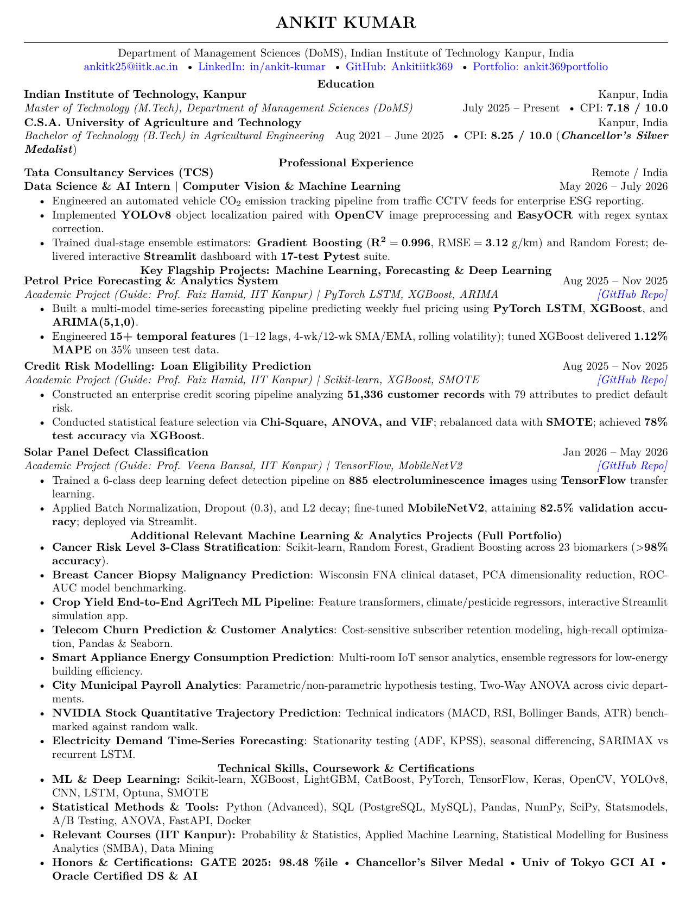
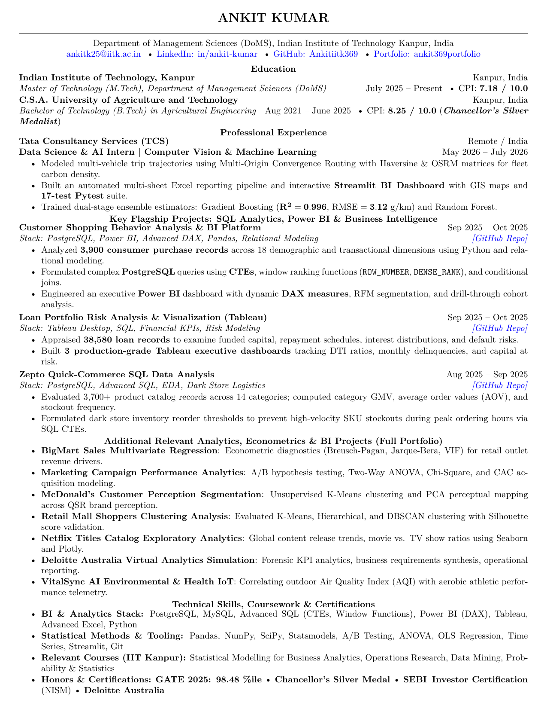

Engineering Scalable AI Systems, Autonomous Agents & Predictive Intelligence.
Data Science & Machine Learning Engineer with deep expertise in Generative AI & Multi-Agent RAG, Computer Vision, Time Series Forecasting, and Enterprise Decision Intelligence. Proven track record with a TCS AI Internship, GATE 98.48 percentile, and 45+ end-to-end production & academic projects.
Bridging Advanced Algorithms with Real-World Engineering
From agricultural engineering optimization to advanced management sciences and generative AI systems at IIT Kanpur.
My Engineering Philosophy
I am currently pursuing my M.Tech in the Department of Management Sciences (DoMS) at the Indian Institute of Technology Kanpur (CPI: 7.18 / 10.0), graduating in 2027. Previously, I earned my B.Tech in Agricultural Engineering (CPI: 8.25 / 10.0), where I was honored with the prestigious Chancellor's Silver Medal for academic excellence.
My interdisciplinary journey combines rigorous quantitative optimization with high-performance software engineering. Whether designing autonomous agentic workflows with LangGraph and ReAct, fine-tuning deep convolutional networks for defect detection, or forecasting daily fuel prices with PyTorch LSTMs, I build systems that are verifiably accurate, latency-optimized, and production-ready.
Academic Foundations
CPI: 7.18 / 10.0 • Focus: Applied Machine Learning, SMBA, Data Mining, Operations Research
CPI: 8.25 / 10.0 • Awarded Chancellor's Silver Medal (Rank 1st)
Class XII: 77.20% • Class X: 80.83%
Professional & Engineering Experience
Hands-on production machine learning, computer vision, and enterprise software engineering.
Data Science & AI Intern • Computer Vision & Machine Learning
- Engineered an automated end-to-end vehicle CO₂ emission tracking pipeline from real-time CCTV feeds to monitor urban carbon footprints for enterprise ESG reporting.
- Integrated YOLOv8 object localization paired with OpenCV image preprocessing (Bilateral Filtering, CLAHE, Otsu thresholding) and EasyOCR with custom regex syntax correction.
- Trained dual-stage ensemble estimators: Gradient Boosting (R² = 0.996, RMSE = 3.12 g/km) and Random Forest (R² = 0.989) for trip emission modeling.
- Delivered an interactive Streamlit monitoring dashboard paired with an automated 17-test Pytest CI/CD test suite.
Frontend & Asset Automation Contributor
- Contributed to the Asset Receiving Automation Module for an enterprise Global Procurement System, digitizing manual tracking across 100+ inventory categories.
- Engineered responsive Angular interfaces for capturing asset metadata, PO numbers, quantities, and storage locations with real-time client-side validation schemas.
- Implemented secure Role-Based Access Control (RBAC), session authentication, and dynamic validation schemas, cutting manual asset ingestion latency by 40%.
IIT Kanpur & Institutional Initiatives
- Alumni & Corporate Relations Coordinator, IIT Kanpur (July 2025 – Present): Driving corporate engagement, guest lectures, and alumni collaborations; organized 10+ departmental technical webinars.
- Campus Coordinator, Mimamsa 2025 (IISER Pune): Directed institutional outreach across northern Indian universities; managed regional logistics.
- NSS Student Volunteer (2 Years): Spearheaded advocacy campaigns for girls' education and digital literacy under "Ek Bharat Shreshtha Bharat".
Core Skills, Frameworks & Tooling
Comprehensive technology stack used to build production AI and data-driven systems.
Generative AI & LLMOps
Production RAG pipelines, agentic orchestration, and safety guardrails.
Machine Learning & Stats
Supervised classification, regression, clustering, and hypothesis testing.
Time Series & Deep Learning
Temporal modeling, commodity forecasting, and neural architectures.
Vision & Document AI
Real-time object localization, OCR extraction, and speech processing.
SQL, BI & Analytics
Relational querying, data modeling, and interactive dashboards.
Software & Production Tooling
Backend deployment, testing frameworks, and version control.
Curated Resumes & Verifiable Credentials
Download the flagship 2-page Harvard-standard Master CV or select role-targeted single-page fast-track resumes for specific openings.
Master Executive Resume (Harvard LaTeX Standard)
Engineered with Type-1 vector scalable fonts, bold quantitative metrics, and 100% ATS compliance. Features IIT Kanpur M.Tech credentials, GATE 98.48 percentile, TCS AI Internship, and the top 6 production & academic systems.


Recruiting for a specialized opening? Download a role-focused single-page CV tailored with exact domain keywords, frameworks, and projects.
GenAI & Autonomous Agents (1 Page)
Tailored for LLM Engineers and AI Agents developers. Spotlights LangGraph, CrewAI, Pinecone Serverless RAG, and Groq LLaMA 3.3.

- MediMind AI: Clinical RAG (96.8% Faithfulness)
- Text-to-SQL ReAct Agent (Google Gemini 2.5 Flash)
- CrewAI Multi-Agent Resume Profiler & ATS Matcher
- TCS Vehicle CCTV Localization & EasyOCR Pipeline
Machine Learning & Data Scientist (1 Page)
Tailored for Data Scientists and ML Engineers. Spotlights PyTorch LSTM, XGBoost, Scikit-learn, hyperparameter tuning, and statistical testing.

- TCS AI Intern: Vehicle CO2 Tracking (R² = 0.996)
- Petrol Price Forecasting (PyTorch LSTM, 1.12% MAPE)
- Credit Risk Default Modeling (51,336 Records, SMOTE)
- Solar Panel Defect Classification (MobileNetV2, 82.5% Acc)
Data Analyst & BI Specialist (1 Page)
Tailored for Business Intelligence, SQL Developers, and Analytics Consultants. Spotlights PostgreSQL CTEs, Power BI DAX, and Tableau dashboards.

- Customer Shopping Analytics (PostgreSQL + Power BI DAX)
- Loan Portfolio Risk Visualization (3 Tableau Dashboards)
- Zepto Quick-Commerce SQL Turnaround Analytics
- Marketing A/B Testing & Two-Way ANOVA Statistical Validation
Explore All 45 Production & Academic Systems
Every single unique project from GitHub and master resume with live repositories, benchmarks, and architectural details.
Scholastic Achievements & Global Certifications
Demonstrated academic excellence and validated industry credentials.
GATE 2025: 98.48 Percentile
Conducted by Indian Institute of Technology, Roorkee
Secured a nationwide top 1.5% percentile rank in Agricultural Engineering, demonstrating elite technical problem-solving capabilities.
Chancellor's Silver Medal Award
Awarded by University Chancellor, C.S.A. University
Bestowed the Silver Medal for Rank 1st academic performance across the B.Tech program (CPI: 8.25 / 10.0).
GCI World April 2026 (Tokyo, Japan)
Matsuo-Iwasawa Laboratory, The University of Tokyo
Selected and successfully cleared the comprehensive Data Science and AI evaluation organized by University of Tokyo's premier AI lab.
Oracle Certified Data Science Professional
Oracle University
Demonstrated proficiency in enterprise machine learning pipelines, model monitoring, MLOps, and scalable cloud deployments.
Oracle Certified AI Foundations Associate
Oracle University
Validated core competencies in generative AI, deep neural networks, natural language processing, and ethical AI practices.
SEBI – Investor Certification
National Institute of Securities Markets (NISM)
Qualified the national regulatory examination in securities markets, portfolio management principles, and risk management.
Interested in building transformative AI systems together?
I am actively exploring Full-Time roles in Machine Learning Engineering, Generative AI / LLMOps, and Data Science. Feel free to reach out directly!